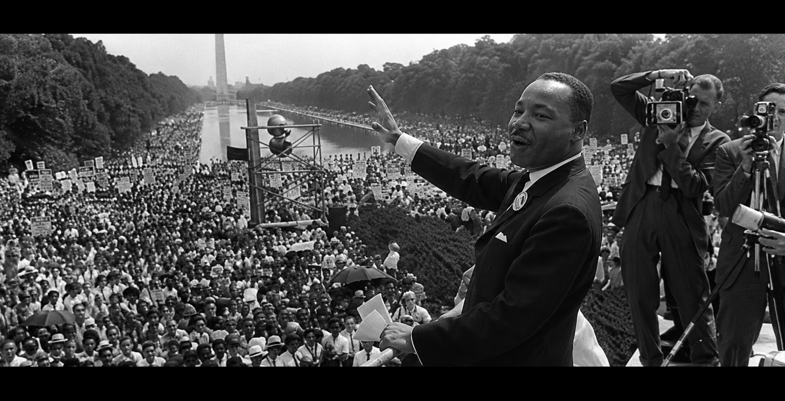
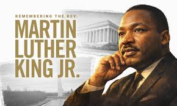
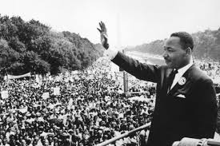
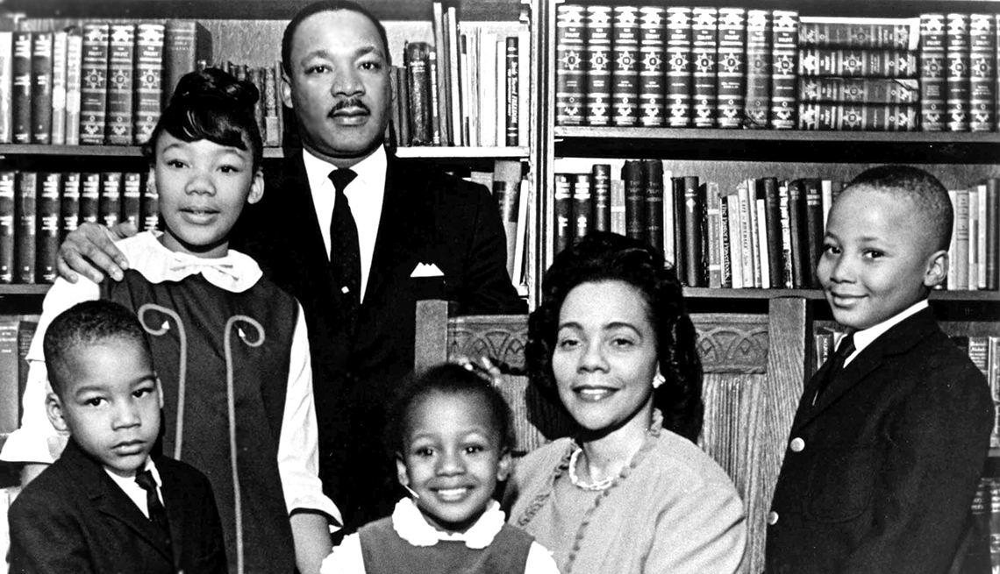
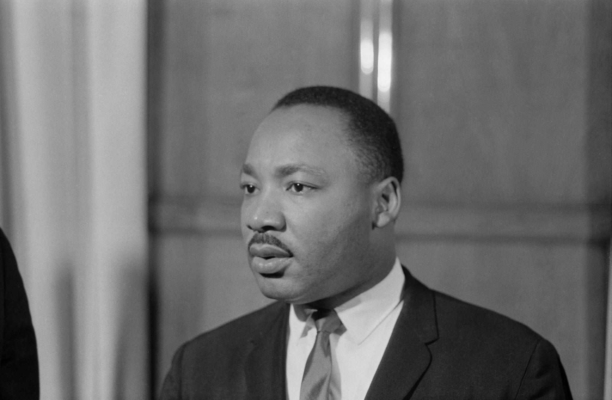
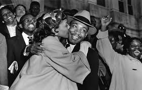
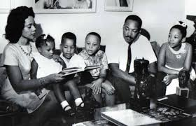

Presentation


Martin Luther King speech about Civil Right
Visitez la COMMUNAUTE de Martin Luther King Jr. fut l'un des dirigeants les plus influents du mouvement américain des droits civiques. À travers ses discours, il défendait l'égalité, la justice et la non-violence. Son discours le plus célèbre, « I Have a Dream », prononcé lors de la March on Washington le 28 août 1963, appelait à mettre fin à la discrimination raciale et imaginait un avenir où les personnes seraient jugées selon leur caractère plutôt que selon la couleur de leur peau. Ses paroles continuent d'inspirer le monde entier dans la lutte pour les droits humains et la justice sociale.
A Propos de Martin Luther King
Martin Luther King Jr. était un pasteur baptiste, militant des droits civiques et l'une des figures les plus importantes de la lutte contre la ségrégation raciale aux États-Unis. Les Afro-Américains subissaient encore de nombreuses discriminations légales et sociales aux États-Unis. Martin Luther King Jr. a mené un combat pacifique pour obtenir l'égalité des droits, s'inspirant notamment des méthodes de non-violence de Mahatma Gandhi .Martin Luther King Jr. reçut le Prix Nobel de la paix 1964 pour son engagement en faveur des droits civiques et de la non-violence .Aujourd'hui, Martin Luther King Jr. est considéré comme un symbole universel de la lutte pour la justice, l'égalité et les droits humains. Chaque année, les États-Unis célèbrent le Martin Luther King Jr. Day en son honneur.





Les Realisations de Martin Luther King
Années Fonction/Travail
1944-1948 Étudiant au Morehouse College, où il obtient une licence en sociologie
1948–1951 Étudiant en théologie au Crozer Theological Seminary.
1951–1955 Doctorant en théologie à Boston University.
1954–1960 Pasteur de l'Dexter Avenue Baptist Church à Montgomery.
1955–1956 Dirigeant du boycott des bus de Montgomery après l'arrestation de Rosa Parks.
1957–1968 Président de la Southern Christian Leadership Conference (SCLC).
960–1968 Copasteur de l'Ebenezer Baptist Church avec son père à Atlanta.
1961–1968 Conférencier, écrivain et porte-parole national du mouvement des droits civiques.
1963 Principal organisateur et orateur de la March on Washington, où il prononce le célèbre discours« I Have a Dream ».
1964 Lauréat du Prix Nobel de la paix 1964.
1965–1968 Militant pour le droit de vote des Afro-Américains, la justice économique et la lutte contre la pauvreté.
1967–1968 Leader de la « Poor People's Campaign », campagne nationale contre la pauvreté aux États-Unis.
Biographie de Martin Luther King
Martin Luther King Jr. (1929–1968) était un pasteur baptiste et un militant américain qui a consacré sa vie à la lutte contre la ségrégation raciale et les discriminations aux États-Unis. Il défendait la non-violence et l'égalité des droits pour tous les citoyens. Il est devenu célèbre en dirigeant le boycott des bus de Montgomery en 1955 et en prenant la tête du mouvement des droits civiques . Le 28 août 1963, lors de la March on Washington, il a prononcé son célèbre discours « I Have a Dream », appelant à une société plus juste et sans discrimination raciale.
Resume de parcours
- Pasteur baptiste
- Theologien
- Orateur public
- Militant des droits civiques
- President d'organisation Nationale
- Ecrivain et Auteur
- Defenseur de la non-violence
- Laureat du prix Nobel de la paix
Consultez la Communauté THE KING CENTER pour plus d'information
Nos Contacts
Adresse geograpgique: Cote d'Ivoire Abidjan Cocody-Riviera3
Adresse Postale: 01 BP 0123456789 Abj 01
Telephone/Fax: 00225 01 61 22 88 86
Whatsapp: yangranet@gmail.com